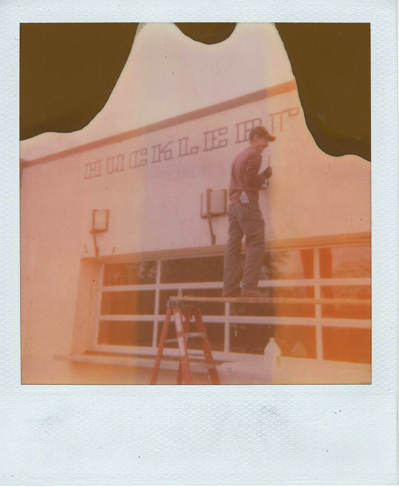

Welcome to Atlas Sign Company!
Atlas Sign Co. was founded by artist and sign painter, Brendan Lenahan. Brendan began his sign painting career through an apprenticeship in Austin, Texas, and has had the pleasure of working with many old-school sign painters coast-to-coast. You can find his work across the country in cities such as Denver, Santa Fe, Austin, San Francisco, New York City, & more.
We are now based in Albuquerque, New Mexico and ready to travel or ship no matter where you are located!
Our Specialties
We specialize in traditional hand painted signs of all sizes and styles. Our services include, but are not limited to:
- Gold leaf
- Window lettering
- Wall lettering
- Murals
- Ghost signs
- Restoration
- Vehicle lettering
- A-frame signs
- Menu boards

Contact us today for a free quote!
Clients
- Patagonia
- Lifetime Tattoo
- Genghis Kern
- Prospect Trail Barbershop
- Denver Tool Library
- The Craftsmen & Apprentice
- Starbucks
- Crispin Porter Bogusky, Almond Joy
- Shinola
- World Tattoo
- Harley Davidson - Santa Fe
- Gotham Greens
- The Universal
- Centurylink
- The Family Jones
- The Ten Penny Store
- Denver City Tattoo
- Huckleberry Roasters